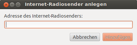

Rhythmbox
Dieser Artikel wurde für die folgenden Ubuntu-Versionen getestet:
Ubuntu 16.04 Xenial Xerus
Ubuntu 14.04 Trusty Tahr
Zum Verständnis dieses Artikels sind folgende Seiten hilfreich:
Rhythmbox  ist seit Ubuntu 12.04 Precise Pangolin wieder der Standard-Audioplayer von Ubuntu. Neben der Wiedergabe verschiedener Audioformate kann Rhythmbox eine Musiksammlung importieren und verwalten, Tags bearbeiten und Wiedergabelisten erstellen.
ist seit Ubuntu 12.04 Precise Pangolin wieder der Standard-Audioplayer von Ubuntu. Neben der Wiedergabe verschiedener Audioformate kann Rhythmbox eine Musiksammlung importieren und verwalten, Tags bearbeiten und Wiedergabelisten erstellen.
Das Programm unterstützt auch die Wiedergabe, das Rippen sowie Brennen von Audio-CDs, Internetradio, Podcasts, Replay Gain, tragbare MP3-Player (u.a. den iPod), Music Sharing und einen Party-Modus. Durch Erweiterungen können direkt aus Rhythmbox heraus Dienste wie last.fm (seit 28. April 2014 nur noch zum "Scrobbeln") genutzt werden.
Installation¶
Seit Ubuntu 12.04 wird das Programm bei einer normalen Desktop-Installation von Ubuntu als Standardanwendung mitinstalliert. Andernfalls benötigt man das Paket [1]:
rhythmbox
 mit apturl
mit apturl
Paketliste zum Kopieren:
sudo apt-get install rhythmbox
sudo aptitude install rhythmbox
Benutzung¶
Nach erfolgreicher Installation ist das Programm bei Ubuntu-Varianten mit einem Anwendungsmenü unter "Multimedia -> Rhythmbox Musik-Wiedergabeprogramm" zu finden. Beim ersten Programmstart fragt Rhythmbox, ob es nach Musikdateien suchen soll. Hier kann der Pfad der eigenen Sammlung angegeben werden.
Die Oberfläche des Programms ist intuitiv zu bedienen. In der linken Spalte wählt man die gewünschte Quelle aus. Hier kann man wählen zwischen:
"Musik": lokale Musiksammlung
"Podcasts": abonnierte Streams
"Radio": Webradio
"Audio-CD" (bei eingelegter CD)
"MP3-Player" (bei eingehängtem Player)
Trayicon¶
Startet man Rhythmbox mit aktiviertem MPRIS-Plugin, so ist das Programm im Trayicon der Lautstärkeregelung zu finden. Klickt man mit der linken Maustaste  darauf, so erscheint ein kurzes Menü, welches aus drei Teilen besteht. In der mittleren Zeile ist die Bedienung von Rhythmbox zu finden. Über die Icons "Wiedergabe", "Vorheriger" und "Nächster" kann die Musikwiedergabe auch bei minimiertem Programmfenster gesteuert werden. Über das Icon "Rhythmbox" erhält man die volle Ansicht. Läuft bereits Musik, so erscheinen in diesem Menü der aktuelle Interpret und Titel. Weiterhin ist in der oberen Zeile die Lautstärkeregelung und in der unteren Zeile die Audioeinstellungen zu finden. Möchte man Rhythmbox ganz beenden, so muss die volle Ansicht angewählt sein. Dann kann über das Menü "Musik" der Punkt "Beenden" gewählt werden.
darauf, so erscheint ein kurzes Menü, welches aus drei Teilen besteht. In der mittleren Zeile ist die Bedienung von Rhythmbox zu finden. Über die Icons "Wiedergabe", "Vorheriger" und "Nächster" kann die Musikwiedergabe auch bei minimiertem Programmfenster gesteuert werden. Über das Icon "Rhythmbox" erhält man die volle Ansicht. Läuft bereits Musik, so erscheinen in diesem Menü der aktuelle Interpret und Titel. Weiterhin ist in der oberen Zeile die Lautstärkeregelung und in der unteren Zeile die Audioeinstellungen zu finden. Möchte man Rhythmbox ganz beenden, so muss die volle Ansicht angewählt sein. Dann kann über das Menü "Musik" der Punkt "Beenden" gewählt werden.
Ansicht¶
Unter "Ansicht" kann man den Player in verschiedene Ansichtsmodi versetzen. Hier können einzelne Elemente ein- oder ausgeblendet und z.B. der Party-Modus ausgewählt werden. In diesem belegt Rhythmbox den gesamten Bildschirm und überdeckt auch das Panel.
Tastenkürzel¶
Ein geöffnetes Fenster von Rhythmbox lässt sich komfortabel über Tastenkürzel steuern:
| Rhythmbox | |||
| Tasten | Funktion | Tasten | Funktion |
| Strg + O | Ordner importieren | Strg + D | Kompakt |
| Strg + J | Auswahl des aktuell gespielten Titels | F11 | Party-Modus (Vollbild) |
| Strg + I | Neuer Internet-Radiosender | F9 | Seitenleiste |
| Strg + P | Neuer Podcast-Feed | Strg + K | Warteschlange in Seitenleiste |
| Strg + W | Programm schließen | Strg + B | Durchsuchen |
| Strg + Q | Rhythmbox beenden | Strg + Y | Anzeige aller Titel |
| Strg + N | Neue Wiedergabeliste | Strg + | Wiedergabe/Pause |
| Alt + ⏎ | Titel-Eigenschaften | Alt + ← | Vorheriger Titel |
| Strg + A | Auswahl aller Titel | Alt + → | Nächster Titel |
| ⇧ + Strg + A | Abwahl aller Titel | Strg + ↑ | Lautstärke hoch |
| Strg + C | Text kopieren | Strg + ↓ | Lautstärke runter |
| Strg + X | Text ausschneiden | Strg + U | Zufällige Titelreihenfolge |
| Strg + V | Text einfügen | Strg + R | Endlosschleife |
Außerdem gibt es noch weitere Befehle die man mit rhythmbox-client auch minimiert (oder sogar noch nicht geöffnet) übergeben kann. Diese kann man anschließend z.B. mit xev unter der jeweiligen Desktopoberfläche als Tastenkürzel festlegen. Der Klient kennt dabei auszugsweise folgende Befehle:
| Rhythmbox | |
| Option | Funktion |
--quit | Rhythmbox schließen |
--no-present | Kein existierendes Rhythmbox verwenden (neu öffnen) |
--next | Springe zum nächsten Titel |
--previous | Springe zum vorherigen Titel |
--play | Setze Wiedergabe fort, wenn pausiert |
--pause | Pausiere Wiedergabe, wenn sie gerade läuft |
--play-pause | Schalte von Abspielen auf Pause und umgekehrt |
--play-uri=URI | Spiele die angegebene Adresse ab, wenn nötig importiere (z.B. m3u oder Internetradio) |
--enqueue | Füge angegebene Titel zur Warteschlange (nur wenn bereits in der Bibliothek) |
--set-volume | Setze Lautstärke (0.0 bis 1.0) |
--volume-up | Erhöhe Lautstärke |
--volume-down | Verringere Lautstärke |
--mute | Schalte auf stumm |
--unmute | Deaktiviere Stummschaltung |
--play-source=URI | Wähle Quelle gemäß der angegebenen Adresse (Gerät oder Einhängepunkt) und beginne Wiedergabe |
Folgendes Beispiel zeigt wie man Rhythmbox mit einer externen Wiedergabeliste öffnet und diese abspielt:
rhythmbox-client --no-present --play-uri=/home/user/music.m3u --play
Konfiguration¶
Bibliothek¶
Unter "Bearbeiten -> Einstellungen -> Musik" kann der Ort der Musiksammlung nachträglich geändert werden. Soll Rhythmbox die Musiksammlung auf Veränderungen hin überwachen, genügt es, die Option "Die Musiksammlung auf neue Dateien hin überwachen" zu aktivieren. In diesem Dialogfenster kann außerdem die Struktur der Sammlung an die eigenen Wünsche und Bedürfnisse angepasst werden.
Experten-Info:
Rhythmbox unterstützt auch Musiksammlungen, die sich nicht in einem zusammenhängenden Verzeichnis befinden. Dies lässt sich jedoch nicht direkt aus Rhythmbox heraus, sondern nur mit Konfigurationseditoren einstellen:
mit dconf-editor im Schema "org → gnome → rhythmbox → rhythmdb" unter dem Schlüssel "locations" (ab Version 2.90)
Die Audiodatenbank sowie die erstellten Playlists befinden sich als xml-Datei im Ordner ~/.local/share/rhythmbox/
Podcasts¶
Das Hinzufügen neuer Podcasts gestaltet sich simpel: Unter "Podcasts" muss in der oberen Leiste "Neuer Podcast-Feed" ausgewählt und anschließend die Adresse eingetragen und mit "Hinzufügen" bestätigt werden.
Unter "Bearbeiten -> Einstellungen -> Podcasts" kann der Speicherort von Podcast-Dateien eingetragen werden. Hier ist es auch möglich festzulegen, mit welcher Häufigkeit Rhythmbox nach neuen Sendungen suchen soll.
Internetradio¶

Um einen Internet-Radiosender hinzuzufügen, kann die Stream-Adresse unter "Musik -> Neuer Internet-Radiosender" angegeben werden. Um einen Stream aufzuzeichnen, gibt es Erweiterungen. Um mit Rhythmbox selbst an einen Internet-Radioserver zu senden, kann ein Source-Client verwendet werden.
Um gleich beim Programmstart einen Radiosender abzuspielen, lässt sich Rhythmbox mit folgenden Parametern starten:
rhythmbox-client --play-uri mms://apasf.apa.at/fm4_live_worldwide %U
Teilweise startet Rhythmbox nicht automatisch, wenn im Browser Radiostream-Links angeklickt werden. Es gibt jedoch die Möglichkeit, speziell für .pls- und .m3u-Links ein spezielles „Wrapper-Skript“ zu verwenden. Dieses findet man auf der Seite des Entwicklers Alex Werner 
 .
.
Audio-CD¶
Sofern eine CD eingelegt wird, sucht das Programm nach dem passenden Datenbankeintrag im Internet und zeigt die korrekten Metadaten an.
Möchte man diesen Datenträger zur Musiksammlung hinzufügen, wählt man "Titel in die Bibliothek kopieren" oder "Entpacken" aus. Die CD wird dann in dem Format in den Rechner eingelesen, das unter "Bearbeiten -> Einstellungen -> Musik" angegeben ist. Es werden nur die markierten Titel kopiert.
Wenn man .mp3 nicht als "Bevorzugtes Format" auswählen kann, muss man die entsprechenden Codecs nachinstallieren:
gstreamer0.10-plugins-ugly
lame
mit apturl
Paketliste zum Kopieren:
sudo apt-get install gstreamer0.10-plugins-ugly lame
sudo aptitude install gstreamer0.10-plugins-ugly lame
MP3-Player¶
„Normale“ MP3-Player werden automatisch ins System eingebunden und sind in der Liste als Quelle zu sehen. Möchte man dies unterbinden, so muss man unter "System -> Einstellungen -> Wechseldatenträger und -medien -> Unterhaltungsmedien" das Häkchen bei "Tragbarer Musik-Player" entfernen. Per Drag & Drop können nun Dateien übertragen werden.
Wird der MP3-Player nicht automatisch erkannt, muss eine leere Datei mit dem Namen .is audio player im Hauptverzeichnis des Players erstellt werden. Nun sollte der Player auch in Rhythmbox erscheinen. Sollte Rhythmbox Schwierigkeiten haben, die MP3-Dateien anzuzeigen, editiert man diese Datei mit einem Texteditor[3] und fügt folgende Zeilen ein:
audio_folders=Music/ folder_depth=2 output_formats=audio/mpeg
Für MTP-fähige Player, wie sie z.B. von Creative gefertigt werden, sollte unter "Bearbeiten -> Plugins" der Haken bei "Tragbare Wiedergabegeräte - MTP" gesetzt werden. Analog dazu sollte für Apple iPods das Plugin "Tragbare Wiedergabegeräte - iPod" aktiviert werden.
Erweiterungen¶
Erweiterungen (Plugins) können durch "Bearbeiten -> Plugins" an- oder abgewählt werden. Interessante Erweiterungen sind u.a. "Cover-Anzeige" und "Tragbarer Player - iPod".
Eine Vielzahl möglicher Erweiterungen mit ausführlicher Beschreibung werden auf askubuntu aufgeführt, etliche sind aus unten erwähnten PPA direkt installierbar.
Rhythmbox-Radio-Browser¶
Mit dem Rhythmbox-Radio-Browser existiert eine Erweiterung (Plugin), die die Wiedergabe und Aufzeichnung von Internetradio ermöglicht. Das Programm basiert auf Streamripper. Durch das Plugin wird das Internetradio-Verzeichnis von IceCast zugänglich (Shoutcast ist ab Sommer 2011 nicht mehr verfügbar).
Für etliche zusätzliche Sender ist der Zugriff nach Ländern geordnet möglich. Wünsche für weitere Sender können an den Entwickler segler alex geschickt werden. Außerdem wird eine Liste der zuletzt gespielten Sender angezeigt (Per Rechtsklick kann diese Liste gelöscht werden).
Um die Senderliste zu aktualisieren, kann der "Runter"-Knopf in der Bedienleiste verwendet werden – damit werden alle Verzeichnisse neu eingelesen. Die Hauptkategorien ("Icecast" und "Local") können auch einzeln markiert und mit der Schaltfläche jede Kategorie einzeln aktualisiert werden. Eine Funktion zum Speichern der Lieblingssender ("Bookmarks") ist ab Version 1.7 implementiert, ebenso lassen sich per Mausklick im Kontextmenü die Webseiten der "Local"-Sender aufrufen.
Das Standardspeicherverzeichnis von Rhythmbox-Radio-Browser ist ~/Musik. Wer einen abweichenden Speicherort einstellen möchte, kann dies mit gconf leicht bewerkstelligen. Dort ist der Schlüsselwert "apps -> rhythmbox -> radio-browser -> streamripper_outputpath" auf ein anderes Verzeichnis zu setzen.
Das Programm kann über ein PPA installiert werden, in dem auch viele weitere Plugins vorhanden sind.
Adresszeile zum Hinzufügen des PPAs:
ppa:fossfreedom/rhythmbox-plugins
Hinweis!
Zusätzliche Fremdquellen können das System gefährden.
Ein PPA unterstützt nicht zwangsläufig alle Ubuntu-Versionen. Weitere Informationen sind der  PPA-Beschreibung des Eigentümers/Teams fossfreedom zu entnehmen.
PPA-Beschreibung des Eigentümers/Teams fossfreedom zu entnehmen.
Damit Pakete aus dem PPA genutzt werden können, müssen die Paketquellen neu eingelesen werden.
rhythmbox-plugin-radio-browser (ppa)
mit apturl
Paketliste zum Kopieren:
sudo apt-get install rhythmbox-plugin-radio-browser
sudo aptitude install rhythmbox-plugin-radio-browser
Nachdem der Radio-Browser installiert ist, muss Rhythmbox neugestartet werden. Danach kann man das Plugin in "Bearbeiten -> Plugins" mit einem Häkchen unter "Internetradio-Verzeichnis" aktivieren.
Designs¶
Zusätzlich zu den zwei Standarddesigns finden sich acht zusätzliche Designs im folgenden Paket:
libvisual-0.4-plugins
mit apturl
Paketliste zum Kopieren:
sudo apt-get install libvisual-0.4-plugins
sudo aptitude install libvisual-0.4-plugins
Sonstige Erweiterungen¶
Erweiterungen
– Erweiterung u.a. für XChathttps://github.com/nvbn/rhythmbox-gmusic
- Musik aus Google Play hören
Problembehebung und Tipps¶
Sicherung der Konfiguration und Anlegen von Wiedergabelisten¶
Installiert man eine neue Version von Ubuntu, ist es sehr angenehm, einfach die Benutzerverzeichnisse der einzelnen Programme aus dem alten Homeverzeichnis in das neue zu kopieren. So steht die vorherige Konfiguration ohne größere Neueinstellungen wieder zur Verfügung. Im Fall von Rhythmbox befinden sich die Einstellungen, der XDG-Spezifikation folgend, in folgendem Verzeichnis:
~/.local/share/rhythmbox
Die Musiksammlung sollte in die gleiche Verzeichnisstruktur gespeichert werden wie zuvor, damit Rhythmbox mit der neuen Ubuntu-Version problemlos funktioniert.
Autoplay¶
In Rhythmbox gibt es keine Autoplay-Funktion. Es ist daher nicht möglich, direkt nach dem Start die Wiedergabe zu beginnen. Jedoch kann man als Notbehelf ein kleines Skript anlegen, das diese Funktion simuliert:
1 2 3 4 | #!/bin/sh rhythmbox-client sleep 5 rhythmbox-client --play |
Dieses Skript muss ausführbar gemacht werden [6] und kann dann direkt oder per Tastenkombination gestartet werden. Zudem kann es in das "Autostart"-Verzeichnis gelegt werden.
Cover-Anzeige¶
Rhythmbox zeigt Bilddaten, die es in den Albumordnern findet, als Cover an. Üblicherweise sucht Rhythmbox nach Bildern mit den folgenden Namen: cover.jpg, cover.png, album.jpg, album.png, albumart.jpg, albumart.png, folder.jpg oder folder.png.
Sind im Ordner keine Dateien hinterlegt, lädt Rhythmbox die passenden Cover der Alben aus dem Internet. Sollte ein falsches Cover erkannt worden sein, kann man dies im Ordner ~/.gnome2/rhythmbox/covers bzw. ~/.cache/rhythmbox/covers ändern.
Wiedergabe von WMA-Dateien¶
Wenn Rhythmbox trotz installierter Codecs keine WMA-Dateien abspielen kann, liegt das meist daran, dass „Crossfading“ aktiviert ist. Über "Bearbeiten -> Einstellungen" sollte dann im Register "Wiedergabe" das Häkchen bei "Überblendungsmodus aktivieren" entfernt werden. Die Änderung wird erst nach einem Neustart von Rhythmbox wirksam.
Links¶
Install Rhythmbox 3.2 on Ubuntu 14.10/14.04
- Blogbeitrag, 04/2015Multimedia
 Übersichtsartikel
Übersichtsartikel
- Erstellt mit Inyoka
-
 2004 – 2017 ubuntuusers.de • Einige Rechte vorbehalten
2004 – 2017 ubuntuusers.de • Einige Rechte vorbehalten
Lizenz • Kontakt • Datenschutz • Impressum • Serverstatus -
Serverhousing gespendet von